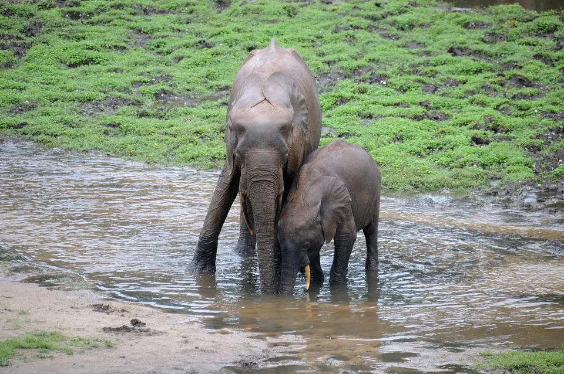

Where elephants live and what they eat
Wild elephants live only in sub Saharan Africa and in South and Southeast Asia. African savanna elephants use almost any habitat with water, from grassland and woodland to desert; African forest elephants live in the rainforests of Central and West Africa; and Asian elephants live mainly in forest mixed with grassy clearings across 13 countries. All are herbivores that eat roughly 75 to 150 kg of plants a day and need water daily when they can get it.

African savanna elephant habitat
The savanna elephant is the most adaptable of the three. San Diego Zoo Wildlife Alliance lists lowland and montane forests, flood plains and all types of woodland and savanna across eastern, central and southern Africa, and the IUCN adds grasslands and deserts. Savanna elephants prefer open country and rarely overlap with forest elephants. Southern Africa holds the largest numbers: the IUCN identifies the Kavango Zambezi Transfrontier Conservation Area, spanning parts of Angola, Botswana, Namibia, Zambia and Zimbabwe, as home to the species' largest subpopulation. Many populations move seasonally between wet season feeding areas and dry season refuges near permanent water. More on the savanna elephant page.
African forest elephant habitat
Forest elephants live in the moist and semi deciduous rainforests of the Congo Basin and in a range of habitats in West Africa. The IUCN reports that Central Africa holds just under 95% of the species, with Gabon alone holding about 66%. They follow fruiting trees through the forest and gather at forest clearings and mineral licks, called bais, to drink and take in minerals. See the forest elephant page.
Asian elephant habitat
Asian elephants survive in isolated populations in 13 countries: Bangladesh, Bhutan, Cambodia, China, India, Indonesia, Laos, Malaysia, Myanmar, Nepal, Sri Lanka, Thailand and Viet Nam. The IUCN's 2020 assessment cites a very approximate total range of about 486,800 square kilometers. The Smithsonian describes them as forest animals that prefer zones where forest is broken by open grassy glades, which offer more plant variety and quick shade, and notes that they often stay near rivers in the dry season. Home range sizes vary enormously, from about 15 to 50 square kilometers to several hundred, depending on food and water. See the Asian elephant page.
What elephants eat
All elephants are herbivores. San Diego Zoo Wildlife Alliance gives a daily intake of roughly 75 to 150 kg of vegetation, about 4 to 6% of body weight, and says elephants spend an average of 16 hours a day eating. They need so much partly because they digest only about 44% of what they eat, according to the Smithsonian.
| Species | Feeding style | Main foods |
|---|---|---|
| African savanna elephant | Grazer and browser | Grasses and sedges (especially in the wet season), leaves, shrubs, bark, roots, flowering plants, small and medium trees |
| African forest elephant | Browser and frugivore | Fruit, seeds, leaves, branches and bark |
| Asian elephant | Browser and grazer, varying by season | Grasses early in the wet season; shrubs, trees, roots, vines, bark and fruit in the dry season and after heavy rains |
Elephants also seek out minerals: they dig at salty soils and visit mineral licks. Crops such as bananas and sugar cane are a favorite in Asia, and maize and other crops in Africa, which puts elephants in conflict with farmers. Read about human elephant conflict.
Water
Elephants drink large amounts when water is available: the Smithsonian gives about 189 liters a day for wild Asian elephants, and San Diego Zoo Wildlife Alliance says its elephants drink about 75 to 190 liters a day. They also use water and mud to cool and protect their skin. In dry seasons they dig into sandy riverbeds with feet, trunk and tusks to reach water below the surface, creating drinking holes that other animals use too.
A shrinking range
Elephants need a lot of space, so habitat loss hits them early. WWF reports that the range of African elephants shrank from about 3 million square miles in 1979 to just over 1 million square miles in 2007, and the IUCN notes that the forest elephant now occupies only about a quarter of its historic range. Asian elephants once ranged from western Asia to China's Yangtze River; today they survive in fragments. The IUCN's Asian Elephant Specialist Group has highlighted a study suggesting that almost 42% of the Asian elephant's currently available habitat could be lost through the combined effects of human pressure and climate change, which is why corridors linking fragments are a conservation priority. See elephant conservation.
Frequently asked questions
Do elephants live in the jungle or the savanna?
Both, depending on the species. African savanna elephants live mostly in open savanna, grassland and woodland but also in forests and deserts. African forest elephants live in dense rainforest. Asian elephants are mainly forest animals that prefer areas where forest meets open grassy glades.
How much does an elephant eat in a day?
San Diego Zoo Wildlife Alliance gives about 75 to 150 kg of vegetation a day, roughly 4 to 6% of body weight, eaten over about 16 hours. The Smithsonian's National Zoo notes elephants digest only about 44% of what they eat, which is why they need so much.
How much water does an elephant drink?
The Smithsonian's National Zoo gives about 189 liters (50 gallons) a day for wild Asian elephants, and San Diego Zoo Wildlife Alliance says its elephants drink about 75 to 190 liters a day. A very large male may need more.
Are there elephants in the desert?
Yes. Some African savanna elephants live in very dry areas, including parts of Namibia and Mali, where they travel long distances between scattered water sources.
Sources
- San Diego Zoo Wildlife Alliance: Elephant fact sheet
- Smithsonian's National Zoo and Conservation Biology Institute: Asian elephant
- IUCN (2021): African elephant species now Endangered and Critically Endangered
- IUCN (2025): DNA methods help uncover further African forest elephants
- IUCN Red List assessment of the Asian elephant (2020), via the Asian Elephant Specialist Group
- IUCN (2021): Shrinking spaces for the world's largest land animal
- WWF: African forest elephant (includes African elephant range figures)
Cite this page
APA
TuskWise. (2026, October 8). Where elephants live and what they eat. https://tuskwise.com/habitats.html
MLA
“Where elephants live and what they eat.” TuskWise, Joshua Israel Ventures LLC, 8 Oct. 2026, tuskwise.com/habitats.html.
Chicago
TuskWise. “Where elephants live and what they eat.” Joshua Israel Ventures LLC. Last modified October 8, 2026. https://tuskwise.com/habitats.html.